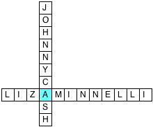
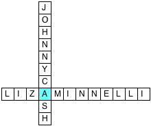

Solution to Now Let's Create Melodies
Authors: Seth Bisen-Hersh and Erin Rhode
Additional lyrics and puppetry: Staci Rosen and Ryan Roe
All of the songs are paraphrases of songs sung by a guest star on The Muppet Show. The guest stars and the songs they sang on The Muppet Show, along with the paraphrased titles, are:
- Arlo Guthrie - Sailing Down This Golden River (Cruising South The Special Waterway)
- Ben Vereen - Pure Imagination (True Innovation)
- Bernadette Peters - Just One Person (Only One Someone)
- Carol Burnett - But Not For Me (Yet Never Mine)
- Carol Channing - Diamonds are a Girl's Best Friend (Precious Stones are a Female's Top Ally)
- Connie Stevens - A Teenager In Love (An Adolescent With Lusty Eye)
- Danny Kaye - Cheek to Cheek (Face to Face)
- Elton John - Don't Go Breaking My Heart (Never Destroy My Blood Pumper)
- Ethel Merman - You're the Top (You Da Bomb)
- Florence Henderson - Happy Together (Ecstatic Jointly)
- Gene Kelly - You Wonderful You (You Fantastic You)
- Gladys Knight - God Bless The Child (Lord Sanctify the Kid)
- Harry Belafonte - Turn the World Around (Rotate the Earth All Over)
- Helen Reddy - We'll Sing in the Sunshine (You and Me'll Vocalize Under The Light)
- Jean Stapleton - I'm Just Wild About Harry (Crazy 'Bout Potter)
- Joel Grey - Razzle Dazzle (Gaudy Displays)
- John Denver - Grandma's Feather Bed (Nanny's Plummage Cot)
- Johnny Cash - Dirty Old Egg Sucking Dog (Filthy Aged Ova-Slurping Pup)
- Judy Collins - Send in the Clowns (Bring in the Comic Relief)
- Julie Andrews - Whistle a Happy Tune (Blow Out a Joyful Melody)
- Linda Ronstadt - It's In His Kiss (It's How He Smooches)
- Liza Minnelli - A Quiet Thing (A Soundless Bit)
- Lynda Carter - Orange Colored Sky (Carrot Tinted Above)
- Madeline Kahn - Feet (Lower Extremities)
- Melissa Manchester - Don't Cry Out Loud (Never Roar Externally Booming)
- Paul Simon - Scarborough Fair (Yorkshire's Exposition)
- Rita Moreno - Fever (Temperature)
- Sandy Duncan - Try to Remember (Attempt to Recall)
- Sylvester Stallone - Let's Call the Whole Thing Off (Let's Forget About It)
- Valerie Harper - Broadway Baby (Wide Road Infant)
Reading the intersecting letters of the grids in order gives: "SANG DISCOURAGED" The song "You Mustn't Feel Discouraged" was sung on The Muppet Show by BUDDY RICH, who is the answer.
 
